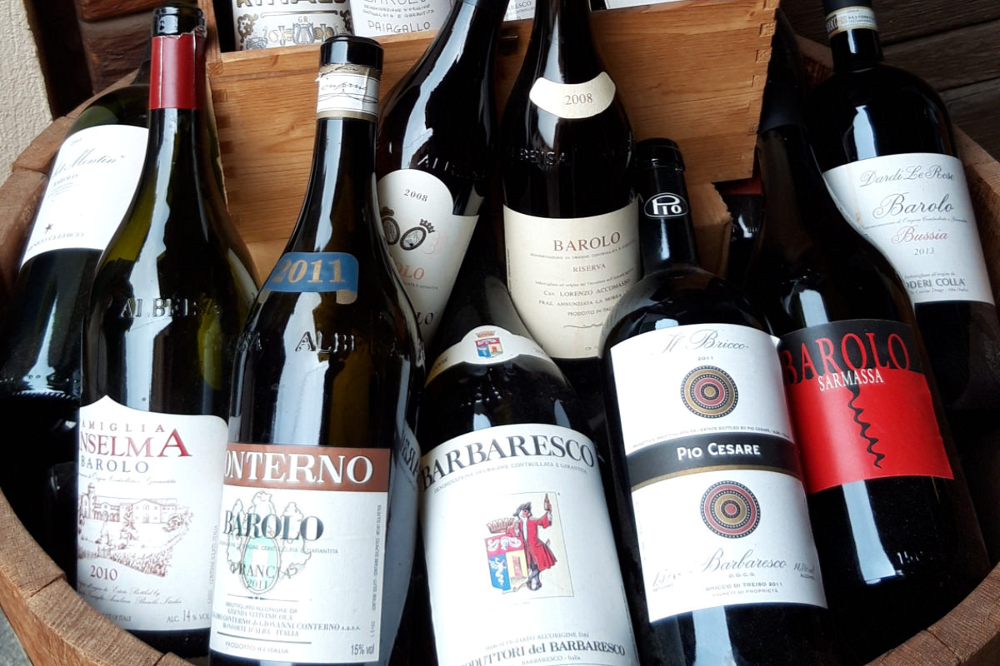
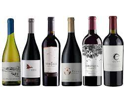
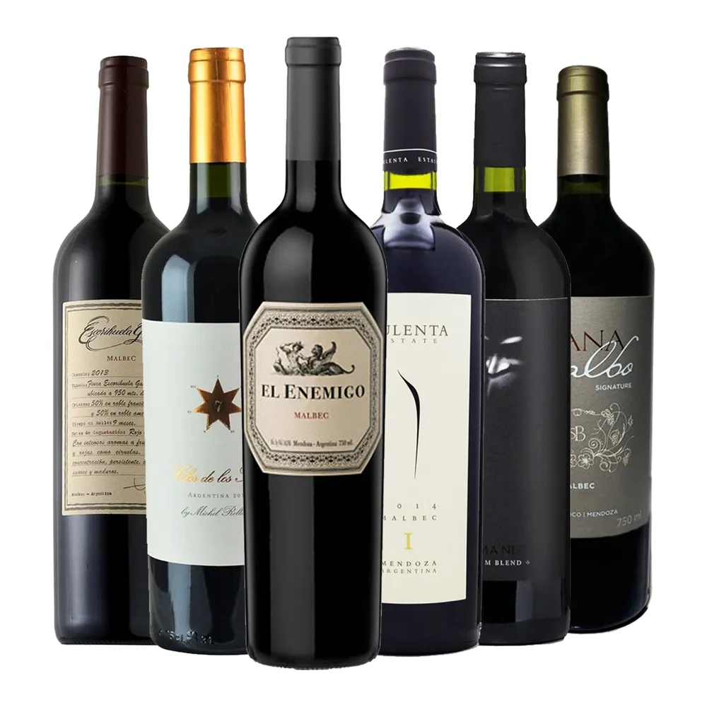
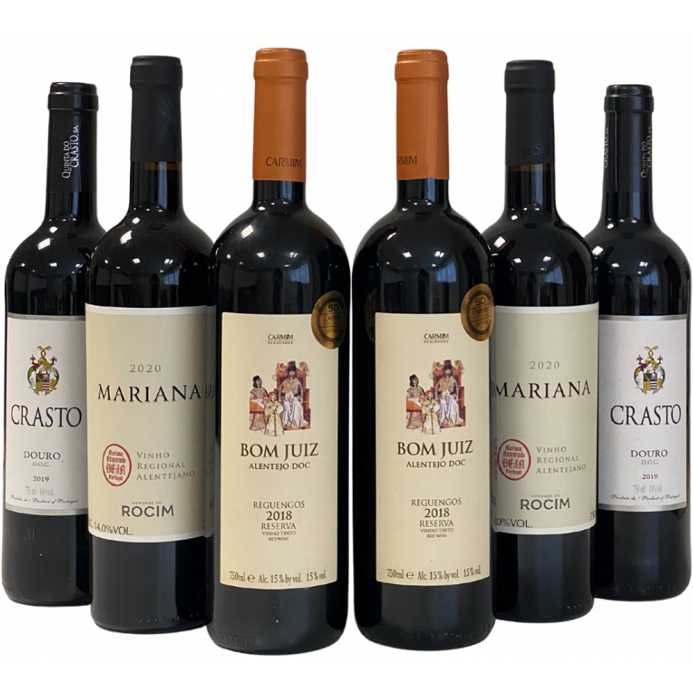

Os 4 principais países produtores de vinhos consumidos no Brasil são: Argentina, Chile, Portugal e Itália.
Abaixo estão algumas características distintas de cada um desses países em termos de produção de vinho:
Itália
Os vinhos italianos são conhecidos por sua variedade e qualidade, com sabores que variam de frutados a terrosos.
A uva mais cultivada na Itália é a Sangiovese, que produz vinhos encorpados e elegantes.
As principais regiões produtoras de vinho na Itália são a Toscana, Piemonte e Veneto.

Chile
Os vinhos chilenos são conhecidos por serem equilibrados, com sabores frutados e notas picantes.
A uva mais cultivada no Chile é a Cabernet Sauvignon, que produz vinhos encorpados e elegantes.
As principais regiões produtoras de vinho no Chile são Valle del Maipo, Valle de Colchagua e Valle del Aconcágua.

Argentina
Os vinhos argentinos são conhecidos por serem encorpados e ricos em taninos, com sabores frutados e notas terrosas.
A uva mais cultivada na Argentina é a Malbec, que produz vinhos intensos e saborosos.
As principais regiões produtoras de vinho na Argentina são Mendoza, San Juan e La Rioja.

Portugal
Os vinhos portugueses são conhecidos por sua diversidade e complexidade, com sabores que variam de frutados a terrosos.
A uva mais cultivada em Portugal é a Touriga Nacional, que produz vinhos encorpados e aromáticos.
As principais regiões produtoras de vinho em Portugal são Douro, Alentejo e Bairrada.
